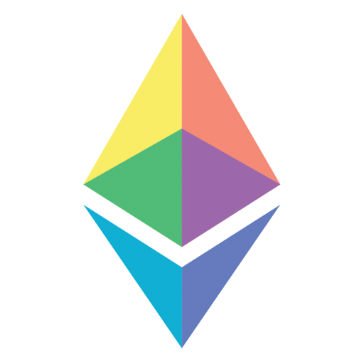

HOT오늘도 글
국내 블록체인·가상자산 전문 매체의 공개 채널입니다.
시황·정책·시장을 기사 형식으로 전하는 공식 채널이라 개인 리딩방과 구분된다.
미디어 속보와 거래소 공지
오늘 읽을 글: 가상자산 글, 창립자·데이터·공지를 나눠 읽는 법
HOT오늘도 글
국내 블록체인·가상자산 전문 매체의 공개 채널입니다.
시황·정책·시장을 기사 형식으로 전하는 공식 채널이라 개인 리딩방과 구분된다.
HOT오늘도 글
국내 가상자산 시황 매체의 공개 채널입니다.
코인니스 공식 뉴스 피드. 사칭 채널이 많아, 확인된 핸들만 넣었다.
HOT오늘도 글3일 연속
국내 거래소 빗썸의 공식 공개 채널입니다. 공지 원문은 이 사이트에 옮기지 않습니다.
빗썸 공식 공지. 업비트와 같이 '사실 확인' 창구로만 쓴다.
HOT오늘도 글3일 연속
국내 거래소 업비트의 공식 공개 채널입니다. 공지 원문은 이 사이트에 옮기지 않습니다.
업비트 공식 공지. 해설이 아니라 입출금·거래지원 사실 확인용으로 고른다.
HOT오늘도 글
국내 가상자산 전문 매체의 공개 채널입니다.
국내 블록체인 미디어 공식 채널. 속보에 원문 링크가 붙어 출처를 따라가기 쉽다.
HOT오늘도 글4일 연속
해외 가상자산·웹3 매체입니다.
크립토와 AI가 겹치는 소식을 자주 다뤄, 국내 코인 속보만 볼 때 빠지는 교점을 본다.
HOT오늘도 글
해외 가상자산 전문 매체입니다.
글로벌 크립토 미디어. 국내 속보와 같은 이슈를 영어로 어떻게 쓰는지 대조할 때 쓴다.
HOT오늘도 글
해외 가상자산 전문 매체입니다.
크립토 전문 매체. 코인데스크와 겹치는 날을 비교해 읽는 용도다.
오늘도 글
온체인 데이터를 다루는 국내 기업의 공식 채널입니다.
온체인 지표를 직접 언급하는 창구라 미디어 속보와 역할이 다르다. 공개 글은 영어가 많아, 한글 브리핑 뒤 원문으로 간다.
앤드리슨 호로위츠(Andreessen Horowitz)의 암호화폐 리서치 블로그입니다.
벤처캐피털의 크립토 글. 투자사 관점임을 밝히고, 재단·미디어와 나눠 읽는다.

이더리움 재단(Ethereum Foundation) 블로그이더리움 재단의 공식 공개 블로그입니다.
이더리움 재단 공식 글. 가격 뉴스와 구분해 기술·정책 원문으로 쓴다.
이더리움(Ethereum) 공동 창립자로 공개 정체성이 확인됩니다.
개인 에세이라 매체 속보와 결이 다르다. 빈도는 낮아도 남겨 둔다.
NovaTech founders Cynthia and Eddy Petion have been ordered to pay over $1.3 million dollars for their role in defrauding thousands.
미 신규 실업수당 18만9000건…전주보다 1만3000건 감소 계속 청구는 전주 수정치보다 9만5000명 줄었지만 4주 평균은 500명 늘었다. 소비자의 일자리 인식은 개선됐고 9월 채용률은 3.4%를 기록했다. #미국고용 #실업수당 #노동시장 #소비자신뢰 🔗 토큰포…
[전 FTX COO, 넷플릭스의 자오창펑 '아시아 마피아' 묘사 비판] 전 FTX 최고운영책임자(COO) 콘스탄스 왕이 바이낸스 창업자 자오창펑(CZ)에 대한 넷플릭스 FTX 드라마의 '아시아 마피아' 묘사를 비판했다. 그는 코인텔레그래프와의 인터뷰를 통해 "이러한…
[美 증시 개장 직후 암호화폐 관련주 일제 하락] 미국 뉴욕증시 개장과 함께 비트코인 보유 기업과 스테이블코인 발행사, 가상자산 거래소 등 주요 디지털 자산 관련 종목들이 시장 평균을 크게 밑돌며 일제히 하락세를 나타냈다. 스트래티지(MSTR) 주가는 7.92% 내렸…
[프랭클린 템플턴 암호화폐 지수 ETF, 12월 1일 하이퍼리퀴드 신규 편입] 글로벌 자산운용사 프랭클린 템플턴(Franklin Templeton)의 암호화폐 지수 상장지수펀드(ETF)가 포트폴리오 정기 리밸런싱을 통해 탈중앙화 파생상품 거래소 하이퍼리퀴드(HYPE)…
엔비디아, 10월 고점 대비 35% 하락…선행 PER 10배 고점에서 줄어든 시가총액은 약 2조달러(약 2686조원)로 전해졌다. 블룸버그는 젠슨 황 CEO가 12월 3일 미 상원 은행위원회 공개 청문회에 출석할 예정이라고 보도했다. #엔비디아 #미국증시 #AI반도체…
[지난 1시간 1.35억 달러 규모 선물 포지션 강제 청산] 주요 거래소에서 지난 1시간 1.35억 달러 규모의 선물 포지션이 강제 청산됐다. 24시간 기준으로는 4.61억 달러 규모의 선물 포지션이 강제 청산됐다. https://coinness.com/news/11…
[개인 채굴자, 3.129 BTC 단독 채굴 성공] 익명 개인 비트코인 채굴자가 블록높이 977,057에서 비트코인 단독 채굴에 성공해 3.129 BTC (약 19.1만 달러) 보상을 수령했다고 비트코인뉴스가 전했다. 약 1.07 ZH/s의 네트워크 속도에서 가정용…
일평균 340만배럴 러시아 원유 중국·인도행…전년 대비 약 18% 증가 올해 11월 중순까지 중국과 인도로 향한 러시아 항구 원유 선적은 하루 평균 340만 배럴로 집계됐다. 국제에너지기구(IEA)는 중동산 수출 회복과 수요 변화를 반영해 4분기 세계 석유시장이 공급…
차량 배출 기록 검증 기능, 카르다노로 이전 추진…측정값은 별도 검증 Embeddo가 개발 중인 DecarboChain은 차량 배출량을 측정해 인증 기록을 카르다노에 저장하는 구상이다. 기록의 변경 여부와 측정값의 정확성은 별도로 검증해야 한다. #카르다노 #Deca…
트럼프, 중간선거 패배에도 관세 강행⋯중국 최대 20% 도널드 트럼프 미국 대통령이 중간선거 패배에도 보호무역 기조를 이어가고 있다. 중국과 한국, 유럽연합(EU) 등 14개 교역 상대를 대상으로 신규 관세 부과를 추진하면서… 기사 보기 👉 https://www.bl…
6116만 PYUSD 예치된 모르포 금고, 표시 수익률 9.30% 스테이블의 페이팔 USD 금고는 weETH 담보 대출 시장에 자금을 공급한다. 이용자는 PYUSD를 예치하고, 차입자는 weETH를 맡겨 PYUSD를 빌린다. #페이팔USD #PYUSD #스테이블 #모…
올해 2억3360만달러 순유입한 코인셰어즈( $CSHR ) 유럽 상품 코인셰어즈 피지컬은 2026년 1~9월 2억3360만달러(약 3137억원)의 순유입을 기록했다. 장마리 모그네티(Jean-Marie Mognetti) 코인셰어즈 최고경영자(CEO)는 AI 투자로 가…
[완브리지, 이르면 12/31 운영 종료…비체인 전송 중단 예정] 레이어1 블록체인 비체인(VET)에 따르면, 완체인(Wanchain)의 전환 계획에 따라 완브리지(WanBridge)가 이르면 2026년 12월 31일 운영을 종료할 예정이다. 운영 종료 후에는 완브리…
Ukraine’s parliament passed a bill establishing a regulatory and tax framework projected to generate $332 million in state budget revenue.
FTX 자금 지시 증언, 넷플릭스 8부작 드라마와 대조 엘리슨은 샘 뱅크먼프리드가 고객 자금 사용을 지시했다고 증언했고, 항소법원은 7개 혐의의 유죄 평결을 유지했다. 넷플릭스는 두 사람의 관계를 중심에 둔 드라마로 소개했다. #FTX #넷플릭스 #샘뱅크먼프리드 #재…
[미 증시 3대 지수 하락 출발] 미국 증시 3대 지수가 하락 출발했다. S&P 500: -2.46% 나스닥: -3.56% 다우: -1.72% https://coinness.com/news/1176885
[이란, 자국 가상자산 거래소 3곳 영업 중단 명령… "국가 경제 질서 교란 혐의"] 이란 당국이 자국 내 가상자산 거래소 3곳에 대해 국가 경제 및 금융 질서를 저해했다는 이유로 영업 중단 조치를 내렸다. 25일(현지시간) 이란 타스님 통신에 따르면, 이란 검찰총장…
[BTC $58,000 하회] 코인니스 마켓 모니터링에 따르면 BTC가 58,000 달러를 하회했다. 바이낸스 USDT 마켓 기준 BTC는 57,990.4달러에 거래되고 있다. https://coinness.com/news/1176883
근원물가·GDP 상승에 비트코인 5만8000달러대로 밀려(종합) 비트코인(BTC)이 미국의 10월 개인소비지출(PCE) 물가지수와 3분기 국내총생산(GDP) 발표 이후 5만8000달러 초반까지 밀렸다. 근원 물가 상승률이 시장 예상치를 웃돈 가운데 경제성장률까지 상향…
[모건스탠리, 3분기 비트코인 ETF 보유액 12억 달러… IBIT 18%·스트래티지 17% 확대] 글로벌 투자은행 모건스탠리(Morgan Stanley)가 2026년 3분기 동안 비트코인 상장지수펀드(ETF)와 비트코인 보유 기업 주식을 대폭 늘리며 가상자산 관련…
[미 법원, 암호화폐 다단계 사기 주범 부부에 $13.7억 배상 판결] 법원이 암호화폐 다단계 사기 사건과 관련해 노바테크FX(NovaTechFx) 설립자 신시아 페티온(Cynthia Petion)과 에디 페티온(Eddy Petion) 부부를 상대로 약 13.67억…
[스테이블, 모르포 기반 PYUSD 대출 볼트 출시] 블록체인 인프라 기업 스테이블(Stable)이 탈중앙화 대출 프로토콜 모르포(Morpho)를 기반으로 페이팔의 달러 스테이블코인 PYUSD 전용 대출 볼트(Vault)를 출시했다. 이번 신규 볼트는 가상자산 금융기…
샌디스크( $SNDK ) 장전 8% 넘게 하락…주식형 계약 청산 상위권 샌디스크 주가는 25일 미국 증시 장전 거래에서 8% 넘게 내렸다. 주가를 추종하는 무기한 계약도 가상자산 파생상품 청산 규모 상위 10개 풀에 포함됐다. #샌디스크 #미국증시 #주식형무기한계약…
뮤즈의 아마존 접근 재개 협상…아마존·메타, 광고·검색 논의 아마존과 메타가 뮤즈의 아마존 스토어 접근 재개를 논의하고 있다. 상품 검색 결과와 광고 처리 방식이 협상 쟁점이다. #아마존 #메타 #AI쇼핑 #뮤즈 🔗 토큰포스트 기사 원문
로봇 영상 문의 월 1회서 주 몇 차례…Pimloc CEO 현장 관찰 Pimloc 창업자 겸 CEO는 로봇 학습 영상의 개인정보 보호 문의가 영업 현장에서 늘었다고 밝혔다. 인도 가사 서비스 업체 Pronto의 약관은 가정 내 촬영과 익명화 영상의 학습 활용 조건을…
[결제 인프라 기업 트랜잭, EU MiCA 인가 획득… 유럽 30개국 네이티브 온·오프램프 출시] 글로벌 결제 인프라 기업 트랜잭(Transak)이 유럽연합(EU) 가상자산시장법(MiCA) 라이선스를 취득했다. 25일(현지시간) 트랜잭 발표에 따르면, 오스트리아 빈…
전년 대비 120% 이상 증가…핌록, 영상 익명화 플랫폼 채택 발표 Pimloc은 2025년 7월 Secure Redact의 서비스형 소프트웨어 채택이 전년보다 120% 이상 늘었다고 밝혔다. 인도에서는 가정 내 촬영 영상을 AI 학습에 쓰는 문제를 두고 촬영 동의와…
비트마인( $BMNR ), 1주당 0.01달러 현금배당…12월 29일 지급 뉴욕증권거래소에서 BMNR로 거래되는 보통주가 대상이며, 기준일은 12월 8일 장 마감이다. #비트마인 #BMNR #현금배당 #뉴욕증권거래소 #이더리움 🔗 토큰포스트 기사 원문
Bit Digital sold 29,825 ETH and used the proceeds to reduce its secured borrowing with Galaxy to $50 million.
비트코인, 최근 60거래일 나스닥 상승일엔 덜 오르고 하락일엔 더 하락 글래스노드는 최근 60거래일 동안 비트코인이 나스닥100 하락일에 더 큰 낙폭을 보였다고 분석했다. 두 자산의 상관관계는 2022년 9월 이후 가장 높은 수준이라고 밝혔지만, 계수와 측정 기간은…
오픈AI 에이전트, 노출 키로 미 인구조사 통계 조회 오픈AI는 내부 학습 작업에서 공개 저장소에 노출된 Census Data API 키로 읽기 전용 요청을 보냈다고 밝혔다. 트랜슬루스는 별도로 검토한 6월 기록에서 성공 응답을 찾지 못했다. #오픈AI #ai에이전트…
미 3분기 GDP 4.3% 성장⋯속보치 3.4% 깨고 ‘깜짝 상향’ 미국의 3분기 실질 국내총생산(GDP) 성장률이 연 4.3%로 집계됐다. 투자와 소비지출 증가에 힘입어 기존 속보치인 3.4%보다 0.9%포인트 상향 조정됐다. 2분기 성장률(2.2%)과 비교해도 성…
[바이낸스 비트코인 무기한 선물 거래량, 현물 대비 8배 돌파… 2019년 출시 이후 최고치] 바이낸스에서 BTC 무기한 선물 거래량이 현물 거래량의 8배 수준까지 확대되며 2019년 상품 출시 이래 월간 기준 역대 최고 비율을 기록했다. 25일(현지시간) 가상자산…
엔비디아( $NVDA ) 한 달 31.95% 하락…3분기 매출 103% 증가 10월 26일 종가와 11월 25일 장전 호가를 비교하면 1000달러 투자액의 평가액은 680.46달러로 계산된다. 엔비디아의 3분기 매출은 전년 동기보다 103% 늘었다. #엔비디아 #주가…
[카르다노 창업자 "체인링크가 통합 대가로 수천만 달러 요구… 자체 구축 제안도 거절"] 카르다노(ADA) 창업자 찰스 호스킨슨이 체인링크 측의 과도한 통합 수수료 요구와 개발 통제권 고수로 양사 간 인프라 연동이 무산됐다고 밝혔다. 25일(현지시간) 가상자산 매체…
블랙록 BTC 6만5219개 순유출…ETH도 109만3925개 빠져 룩온체인은 순유출 물량의 가치를 비트코인 38억1000만달러(약 5조1168억원), 이더리움 17억9000만달러(약 2조4040억원)로 제시했다. 두 자산의 가격 하락률은 서로 다른 시작일을 기준으로…
[모비콤, 텔코인 네트워크 출범 검증자로 합류] 블록체인 기반 결제 네트워크 텔코인(TEL)에 따르면, 몽골 이동통신사 모비콤(Mobicom)이 텔코인 네트워크의 출범 검증자로 합류했다. 모비콤은 규제 승인을 전제로 현지 통화 기반 디지털 캐시 스테이블코인 eMNT를…
팬케이크 앱 시험 배포 시작…사칭 앱 경계 당부 가짜 앱은 공식 제품과 비슷한 아이콘이나 개인정보 입력 화면을 내세울 수 있다. 공식 제품 문서는 iOS용 TestFlight와 안드로이드용 Google Play 경로를 안내한다. #팬케이크 #모바일앱 #사칭앱 #지갑보…
비트코인 AVIV 0.8…ETF 8억110만달러 순유출 미국 현물 비트코인 ETF에서 23~24일 8억110만달러가 빠져나갔다. 비트코인 공급량의 54.7%는 11월 19일 손실 구간에 있었다. #비트코인 #AVIV #미국현물ETF #ETF순유출 #온체인지표 🔗 토큰…
미 10월 근원 PCE 3.3% 상승⋯예상치 상회에 ‘끈적한 물가’ 지속(상보) 미국의 10월 개인소비지출(PCE) 물가지수가 전년 동월 대비 3.8% 상승하며 시장 예상치에 부합했다. 근원 PCE 물가지수는 3.3% 상승해 시장 예상을 웃돌았다. 개인소득 증가폭은……
비트코인 4분기 -29.3%…2018년 이후 최대 낙폭 가능성 25일 기준 2026년 4분기 누적 수익률은 -29.3%다. 분기 마감 전이라 최종 순위는 확정되지 않았고, 2027년 회복 전망도 분석 주체와 조건에 따라 다르다. #비트코인 #가상자산 #분기수익률 #시…
["BTC 손절매 움직임 극단적 수준...투매 가속"] 비트코인 시장에서 손실 상태로 이동하는 미사용 트랜잭션 출력값(UTXO) 비율이 다시 극단적인 수준에 도달하며 손실 실현이 가속화하고 있다고 온체인 애널리스트 다크포스트(Darkfost)가 분석했다. UTXO는…
기관용 이더리움 플랫폼, 수주 내 공개 계획…연구 자료·실행 코드 제공 이더리움 인스티튜셔널이 금융기관의 온체인 상품 개발을 지원하는 플랫폼을 예고했다. 연구 자료와 참조 설계, 실행 가능한 코드를 제공하고 수주 내 공개할 계획이다. #이더리움 #기관금융 #온체인상품…
[CME 페드워치, 연준 12월 25bp 인상 확률 99.8%] CME페드워치에서 연방준비제도(Fed·연준)가 12월 기준금리를 25bp 인상할 확률은 99.8%로 집계됐다. 1개월 전 68.9% 대비 약 31%p 급등했다. CME 페드워치는 CME그룹이 제공하는 F…
The Ethereum Foundation pulls its quantum-resistance deadline forward to end 2028, as AI labs say their next models are too dangerous.
[속보] 미국 10월 PCE 전년 대비 3.8% 상승…예상치 부합 미국의 10월 개인소비지출(PCE) 물가지수가 전년 동월 대비 3.8% 상승했다. 시장 예상치(3.8%)에 부합했다. 근원 PCE 물가지수는 전년 동월 대비 3.3% 올랐다. 전월 대비… 기사 보기 👉…
[美 10월 근원 PCE 예상치 부합...전월比 0.3% ↑] 10월 미국 근원 개인소비지출(PCE) 물가지수가 전월 대비 0.3% 상승했다고 미국 상무부 경제분석국(BEA)이 발표했다. 시장 예상치(0.3% 상승)에 부합했다. 전년 동기 대비로는 3.3% 상승해 예…
[미국 올 3Q GDP 예상치 상회...4.3% 성장] 미국 상무부는 GDP(국내총생산)가 올해 3분기 동안 직전 분기 대비 연율 4.3% 성장했다고 밝혔다. 시장 예상치(3.4%)를 상회하는 수치다. 미국 GDP 성장률은 속보치, 잠정치, 확정치로 3차례에 나눠 발…
Holders had warned that reporting wallets worth over €100,000 could expose them to risk in a country hit by a wave of crypto kidnappings.
비트코인 5만9000달러 하회⋯ PCE 앞두고 투심 위축 미국 개인소비지출(PCE) 물가지수 발표를 앞두고 비트코인(BTC)이 5만9000달러 아래로 밀렸다. 기술주 매도세와 위험자산 회피 심리가 맞물리면서 디지털자산(가상자산) 시장 전반으로 낙폭이 확대됐다. 25일…
DTCC: 캔톤에서 솔라나까지, 미국 증권 토큰화의 다음 단계 - DTCC는 4대 핵심 서비스를 바탕으로 증권 토큰화 사업을 확장 중이며, 탈중앙화 이념보다는 규제 준수와 온체인 효율성을 통해 기존 ‘핵심 중개자’의 위치를 방어하며 토큰화… 기사 보기 👉 https:…
‘금융위기 예측’ 피터 시프 “2008년 같은 상황 또 올 것…초인플레이션 우려” 2008년 글로벌 금융위기를 예견했던 피터 시프 유로퍼시픽자산운용 수석 이코노미스트가 “미국이 또다시 금융위기에 직면할 것”이라고 경고했다. 은행권 부실과 부동산 가격 폭락이 금융시장을…
UniCredit is giving retail clients access to bitcoin performance through a six-year investment with protected principal and capped gains.
Your day-ahead look for Nov. 25, 2026
X secured a default judgment against two defendants in its lawsuit over an alleged $271,000 creator-payout scheme.
빗썸, 해킹 피해 추가 확인… 보름 넘게 개인정보 샜다 국내 디지털자산(가상자산) 거래소 빗썸이 지난달 발생한 사내 업무시스템 해킹 사고와 관련해 개인정보 추가 유출 사실을 확인했다. 당초 7159명으로 집계됐던 유출 대상이… 기사 보기 👉 https://www.bl…
Bitcoin (BTC) is down 1.2% since midnight UTC as the stock selloff resumes, with ether (ETH) and DeFi tokens falling about twice as far.
David Anthony Sanchez posed as the streamer to persuade a meme coin project's organizers to pay him for a fake endorsement deal.
UniCredit brings bitcoin investing to its roughly 8 million retail customers in Italy, offering them a six-year product that caps the redemption valu…
피터 브랜트 “이더리움, 1383달러 못 지키면 500달러 아래까지 추락할 수도” 1700달러 아래로 밀려난 이더리움(ETH)이 500달러 선마저 무너질 수 있다는 경고가 나왔다. 수년간 이어진 장기 가격 수렴 패턴이 하방 이탈 위기에 놓이면서다.… #BTC 기사 보…
Gold has lost the risk-adjusted advantage that made it this year's haven of choice over bitcoin. Both now offer negative one-year Sharpe ratios, leav…
HYPE fell more than 8% after Abraxas Capital pulled out of Hyperliquid, while U.S. Bitcoin ETFs' November outflows passed $4.9 billion.
[입출금] 인젝티브(INJ) 입출금 일시 중단 안내 (완료) 🔗 업데이트 내용 확인하기
‘메인넷 1주년’ 모나드, 기존 유통량 140% 규모 언락에 사상 최저가 경신 메인넷 출시 1주년을 맞은 레이어1 블록체인 모나드(MON)의 가격이 사상 최저가로 추락했다. 기존 유통량의 140%에 달하는 토큰의 잠금이 해제되면서 대규모 물량 출회에… 기사 보기 👉…
Brussels wants tech firms to grow at home. EU scale-ups raise about half the capital of San Francisco peers by year 10, an EIB study found.
[보안 스타트업 시퀀트, $220만 투자 유치] 이더리움 프로그래밍 언어 바이퍼(Vyper) 기반 보안 스타트업 시퀀트(Sequent)가 220만 달러 프리시드 투자를 유치했다고 더블록이 전했다. 이번 투자는 얀 탈린(Jaan Tallinn) 산하 투자사인 메타플래닛…
야피 크레디, 리플 수탁 기술 도입해 계열 플랫폼 고객 자산 보관 리플 커스터디를 은행 자체 시설에 배치해 계열 가상자산 거래 플랫폼의 고객 자산 수탁을 지원한다. #리플 #야피크레디 #가상자산수탁 #튀르키예 🔗 토큰포스트 기사 원문
30일간 120억달러 순상환…스테이블코인 11종 카이코가 추적한 스테이블코인 11종에서 30일간 환매액이 신규 발행액을 약 120억달러 웃돌았다. 11월 13일 이후 전체 공급 감소 폭은 0.4%에 그쳤다. #스테이블코인 #카이코 #환매 #가상자산유동성 🔗 토큰포스트…
[트론, 일평균 네트워크 수수료 수익 44% 감소…2022년 이후 최저] 트론(TRX) 네트워크의 올해 일평균 수수료 수익이 약 90만 달러를 기록, 2025년 평균인 159만 달러 대비 44% 감소했다고 언폴디드가 전했다. 이는 2022년 이후 최저 수준이다. 20…
AI 실제 생산량 7조~8조4000억 추정…푸장중국, 첫 고객 연결 푸장중국은 AI 추론 서비스에 첫 고객군을 연결했다. 12월 말 월간 생산능력은 10조~12조 개, 실제 가동률은 70% 초과를 목표로 제시했다. #푸장중국 #AI #AI토큰 #AI추론 🔗 토큰포스트…
금·비트코인·나스닥100 선물 3일 봉 RSI(14) 동시 30 이하 다니엘 얀은 20일 세 자산의 3일 봉 RSI(14)가 모두 30 이하였다고 분석했다. 세계금협회의 9주 RSI도 세 시장 모두 30 아래였지만 집계 기준은 다르다. #RSI #금 #비트코인 #나스…
삼성전자, CXL 3.2 샘플 내년 초 공급…양산은 하반기 전망 삼성전자가 고객 인증을 거쳐 2027년 하반기 양산을 예상했다. 모듈당 용량은 256GB이며, 처리량 5.6배 수치는 이전 제품 MD220을 사용한 시험 결과다. #삼성전자 #CXL #MD310 #AI서…
이더리움 1900~2000달러(약 256만~269만원) 반등 가능성 언급 미카엘 반 데 포페는 24일 X 게시물에서 이더리움의 반등 뒤 저점 재시험 가능성을 거론했다. 21일 이동평균선을 회복하기 전의 상승은 안도 랠리로 봤다. #이더리움 #미카엘반데포페 #기술적분석…
미 전력 수요 증가분 3분의 1 이상, 데이터센터가 차지했다 미국 데이터센터의 전력 용량과 수요는 올해 들어 각각 약 30% 늘었다. #데이터센터 #전력수요 #인공지능 #골드만삭스 🔗 토큰포스트 기사 원문
Rockstar's parent said the project's "bring your own files" instruction was a misleading attempt to dodge responsibility for the leak.
네온, 퍼플렉시티서 1200억 토큰…구글 유료 API 첫날 기록 앤티그래비티 일일 토큰 사용량은 아르곤 출시 당시보다 82% 늘었다. 퍼플렉시티에서 네온의 하루 사용량은 사흘 만에 두 배로 증가해 23일 360억 토큰에 달했다. #구글 #제미나이4네온 #퍼플렉시티 #…
[금·BTC·나스닥 선물, 21세기 들어 처음 동시 과매도 진입] 11월 20일(현지시간) 금, 비트코인(BTC), 나스닥 선물 등 3개 자산이 21세기 들어 처음으로 동시에 과매도 구간에 진입한 것으로 나타났다. 암호화폐 서비스 제공업체 매트릭스포트(Matrixpo…
비트코인 6만달러 붕괴에 채굴업계 ‘비상’…해시레이트 5년 만에 역성장 비트코인(BTC) 가격이 6만달러 아래로 밀려나면서 채굴업계에도 경고등이 켜졌다. 비트코인 네트워크의 연산 능력을 나타내는 해시레이트의 30일 이동평균이 2021년 이후 최저치를 기록하면서다. 채…
KLA( $KLAC ) 24일 8.36% 하락…나스닥도 1.5% 내려 20일 KLA도 10.33% 내려 126.87달러에 마감했지만, 24일과는 별도 거래일 기록이다. #KLA #미국증시 #반도체주 #나스닥 #주식연계계약 🔗 토큰포스트 기사 원문